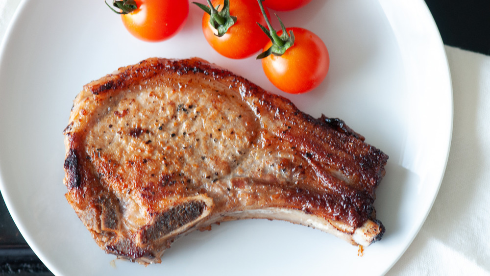

Pork Chop Recipe

Pan-Seared Pork Chop with Garlic and Thyme
This is a classic pork chop recipe perfect for special occasions.
Pork Chops or Pork Loins are the recommended cuts for this recipe.
Ingredients
- Pork Chop or Pork Loin (about an inch thick)
- Salt
- Pepper
- Garlic
- Thyme
- Olive Oil
- Butter
Recipe Instructions
- Heat up the pan on high heat
- While waiting for pan to heat up, season both sides of the pork chop with salt and pepper
- Add olive oil and place pork chop on pan (cook on both sides for 5-6 minutes)
- In the final two minutes of cooking time, add a table spoon of butter to the pan with the garlic and thyme
- Remove pork chop from pan and let it rest for 5 minutes
- Once rested, plate it to your liking and enjoy!